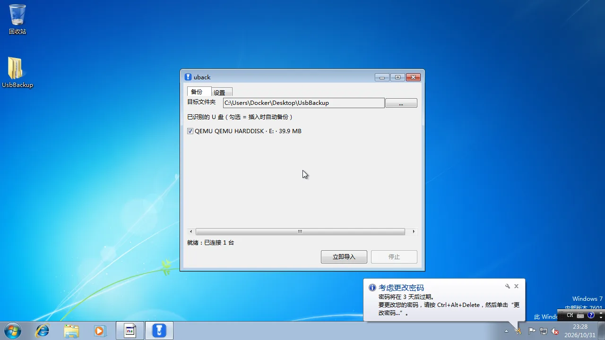
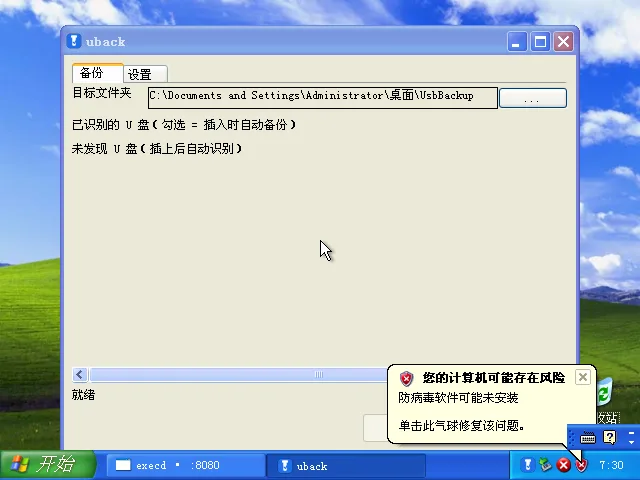

← 全部示例
uback（U 盘自动备份）
插上 U 盘就自动把里面的文件增量备份到电脑，只增不删、绝不动你电脑里的旧文件。

Windows 7

Windows XP
1.3 MB · 单文件 · 免安装
· Windows XP+ (32 / 64 位)
下载 uback.exe
用法
- 备份：插上 U 盘，在「备份」页勾选这支盘（每台设备一行复选框）。
之后每次插入，程序自动把它里面的文件增量复制到电脑，
已存在且大小/时间没变的文件直接跳过。
- 只增不删：只往电脑里加文件，绝不删除或覆盖成旧版
— U 盘上删掉的文件在备份里保留。
- 手动：不想等插入？点「立即导入」立即备份当前插着的盘
（无序列号的盘也能这样手动备份）。
- 托盘：关窗只是隐藏到托盘，程序继续监视插盘。
托盘右键可「暂停 / 恢复自动备份」（与设置页总开关同源）、「退出」。
- 开机自启：设置页勾上，开机后常驻后台自动备份。
识别与安全
- 只认硬件序列号：从 USB 存储描述符读
iSerialNumber，
不用盘符/卷标做身份；序列号变了就当作另一支盘，绝不混备份。
- 隐私默认：不备份任何盘 — 每行复选框都要你手动勾。
勾选、目标文件夹、总开关都存配置文件，改哪台备份哪台。
- 克隆盘警示：同一序列号但容量/卷标变化（读卡器换卡、克隆盘）→
本次不自动导入并提示，避免把另一支盘的内容混进来。
行为细节
- 目标：
<桌面>\UsbBackup\<厂商>_<型号>-<序列号哈希>\
（忽略 OneDrive 桌面提示；可在设置页改根目录）。
- 操作记录：每个设备目录一个
uback.txt，逐文件记
「复制 / 失败」，跳过只在汇总行报数；UTF-8 带 BOM，记事本可读；
单次明细 5 万行上限、5 MB 轮转 uback.1.txt。
- 增量判断：目标已存在且大小、修改时间（FAT 2 秒容差）一致 → 跳过；
否则覆盖复制。保留 U 盘文件的修改时间。
- 中断恢复：先写
.part 再原子改名，拔盘/断电不会留下半个文件；
中途停止，已完成的部分保留，下次增量续传。
- 配置：
%APPDATA%\uback\config.json（原子写）；
全局日志 %APPDATA%\uback\uback.log。
注意：备份是「单向、只增」的 — 程序不会删除或回写电脑端文件，
也不会把 U 盘文件当「要删除」处理。请确认目标盘有足够空间。